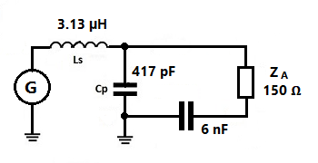

Unsymmetrische Anpassnetzwerke (Antennentuner /-koppler) können mit einer Symmetrierung nach DL3LH auf eine einfache Art für symmetrische Anwendungen angepasst werden ohne die Verwendung eines Baluns. Dabei muss eine kleine Asymmetrie in Kauf genommen werden, was aber in den meisten Fällen keine Rolle spielt, da viele Antennenanlagen per se schon eine leichte Asymmetrie aufweisen.
Mit der hier dargestellten Modifikation eines Anpassnetzwerkes kann einerseits die aufwendige Konstruktion eines symmetrischen Antennenkopplers vermieden und ein vielleicht schon vorhandener asymmetrischer Koppler für die Speisung mit einer symmetrischen Doppelleitung (Hühnerleiter) verwendet werden.
Andererseits kann man mit dieser Methode auch den Einsatz eines Baluns vermeiden (mit Balun ist hier nicht die Verwendung einer Mantelwellensperre auf dem Koaxialkabel am Tunereingang gemeint, sondern ein zum Symmetrieren verwendeter Balun). Ein Hauptgrund für das Weglassen eines symmetrierenden Balun sind die Verluste, welche in einem solchen auftreten können.
Die Methode selbst ist einfach. Mittels eines grossen Koppelkondensators in der Minusleitung der symmetrischen Doppelleitung (in einem Hühnerleitungsbein) wird diese Seite der Doppelleitung von der Masse entkoppelt und auf ein höheres Spannungsniveau über Masse (Erde) angehoben. Im Folgenden die Darstellung des Vorschlages von DL3LH mit der entsprechenden mathematisch-physikalischen Erklärung von DL3LH :
Eine hochfrequente Leitung arbeitet im Gegentaktbetrieb. Die Spannungen zwischen den Leitern und einem gemeinsamen Potential sind gegenphasig, weil die Spannung zwischen den Leitern in zwei gleiche, gegenphasige symmetrische Spannungen aufgeteilt werden können. Wir erhalten (Bild 1):
U2 = U21 + U22 = ½ U2 - (- ½ U2) (Gl. 1)
Ist R2 z.B. der reelle Eingangwiderstand einer symmetrischen Zweidrahtleitung, dann liegt die Spannung U2 an R2 und ein „Bein“ der Zweidrahtleitung auf dem Potential gegen Masse
Up + U21 und das andere auf Up – U22, wobei die Phase von Up zu berücksichtigen ist Bild 1.
Wird Up klein gehalten, sind die resultierenden Summenspannungen:
U21 + Up ≈ Up – U22 (Gl. 2)
Da keine Antennenanlage wirklich symmetrisch ist und wir immer Gleichtaktanteile haben, kann die zusätzlich erzeugte Unsymmetrie nach (Gl.2) meisten vernachlässigt werden. Akzeptieren wir eine gewisse zusätzliche Unsymmetrie durch unsere Schaltung, dann kann der Balun entfallen.
Die Entkopplung der Zweidrahtleitung von Masse und Anhebung auf das Potential Up kann mittels eines verlustarmen Kondensators erfolgen, dessen Kapazitätswert so groß gewählt wird, dass keine, oder nur eine geringe Transformation der Antennenimpedanz erfolgt. Die Schaltung zeigt Bild 2.
Der Wert der Entkopplungskapazität Ck liegt in den Grenzen zwischen Ck = 2000 bis max. 6000 pF und darf diesen numerischen Wert nicht übersteigen.Der Serienkondensator muss für die Strombelastung I2 ausgelegt sein. Im praktischen Fall können mehrere Kondensatoren parallel geschaltet werden.
Als Beispiel die Berechnung nach Bild 2 rechts:
Wir gehen wir von einem verlustlosen Kondensator von C = 4000 pF aus. Bei einer verfügbaren Leistung von Pv = 500 W ist die Spannung über der Last
U2 = √ 500 W * 150 Ω = 158,11 V und der Strom I2 = √ 500W / 150 Ω = 1,825 A. Bei f = 3,6 MHz ist der Blindwiderstand des Koppelkondensators Xc = 11 Ω und die
Spannung über dem Kondensator Uck = - j 11 Ω * 1,825 A = - j 20,08 V.
Die Spannung eilt dem Strom um φ = 90o nach. Die geometrische Summe
der Spannungen U2 und Uck ist die Spannung über der Parallelkapazität Cp = 417 pF und berechnet sich aus dem Pythagoras zu U3 = √ (158,11 V)2 + (20,08 V)2 = 159,37 V.
Der Phasenwinkel zwischen Uck und U2 ist δ = - artan (20,08/158,11) = - 7,23o und die Spannung fast phasengleich mit U2. Teilen
wir (nach Bild 1) die Spannung über der Last in zwei gleiche Anteile auf, dann sind diese U21 = ½
Ú2 = 79,06 V und
U22 = - 70,06 V. Die beiden Spannungen von Leiter I und II gegen Masse sind einmal die geometrische Summe und das andere
mal die Differenz der Spannungen U2 und Uck, weil Uck senkrecht auf U2 steht.
Aus der Rechnung folgt U21 + Uck = √ (79.06 V)2 + (20,08 V)2 = 81,57 V und U22 – Uck =
√ (79.06 V)2 - (20,08 V)2 = 76,43 V. Wir haben also eine
kleine Unsymmetrie in den Spannungen von Leiter I zu Leiter II gegen Masse von 81,57 V zu 76,43 V, die tragbar ist, dafür kann der Balun entfallen.
Die Verwendung eines Kondensators nach Bild 2 zur Entkopplung der symmetrischen Leitung von Masse ist für alle Frequenzen gültig, da sich bei
steigender Frequenz deren Blindwiderstand weiter verringert.


(ZA = Impedanz der Antenne resp. Hühnerleiter)
Quellangabe: Optimierung von Antennenanlagen im KW- Bereich Teil 3, "Unsymmetrische Anpassnetzwerke für symmetrische Anwendungen, Symmetrierung nach DL3LH", Institut für Umwelttechnik Nonnweiler / Saar Dr. rer. nat. Schau DL3LH
Die Impedanz der angeschlossenen symmetrischen Last wird durch den Koppelkondensator von 6 nF nur minim und unwesentlich verändert. Die Spannungsbelastung dieses Kondensators ist gering, jedoch muss dieser für den hohen Strom konzipiert werden. In der Praxis können mehrere Kondensatoren parallel geschaltet werden.
Wird ein Anpassnetzwerk in Hochpass-Schaltung (mit C seriell und L parallel) verwendet, muss der 6 nF-Kondensator nicht in das Hühnerleiterbein, sondern zwischen Generator und L eingesetzt werden. (Bild 3).
Ich habe einen Antennenkoppler nach obiger Vorgabe konstruiert. Bei der anschliessenden Testung auf Symmetrie mit der "Fahrradlämpchen-Methode" (vgl. auch symmetrischer Antennentuner) findet sich keine wahrnehmbare Asymmetrie. Es zeigt sich wie bei meinem symmetrischen Koppler eine gleiche Helligkeit der beiden Fahrradlämpchen.


(hier mit 2 W bei 3.5 MHz an meinem 2x17m Dipol
mit einer 2.7m langen 600 Ω Doppelleitung)
Praktische Anwendung dieser Art der Symmetrierung:
Nach erfolgreichem Testen mit obigem kleinen Koppler erfolgte der Bau eines asymmetrischen Kopplers mit "Symmetrierung nach DL3LH" in qro-Ausführung für bis 1 kW.
Zum Abstimmen des schleiferlosen Drehkos und eines Variometers
werden Getriebemotoren verwendet. Die Rückmeldung über die
aktuelle Stellung von Drehko und Variometer erfolgt mittels
Potentiometern und wird im Shack relativ als Spannung angezeigt.
Hochleistungsrelais mit grosser Spannungsfestigkeit sind für die
auftretenden Spannungen bei 1 kW aus-gelegt. Ein Relais ist für die
Schaltung je nach hoher oder tiefer Eingangsimpedanz an der
Hühnerleiter
da. Das andere Relais schaltet die Variometer-spulen parallel oder in
Serie, um einen grossen Bereich von 0.9 µH - 40 µH abzudecken.
Mit Umstecken von Kurzschlussbrücken (auf der Rückseite; Bild 7 und 8) kann der Tuner in Hoch- oder Tiefpasskonfiguration betrieben werden.


Der grosse Kondensator zur "Nahezu"-Symmetrierung
(respektive die wegen der grossen Strombelastung parallel
liegenden Kondensatoren) von hier insgesamt 5.6 nF erkennt
man am Boden zwischen Drehko und Getriebe.
Zur Elimination von allfälligen Mantelwellen ist am
Tunereingang eine entsprechende Sperre (11 Wdg RG-142 auf einem
Ringkern FT240-31) angebracht.
Die Fernsteuerung des oben beschriebenen Kopplers::
Auf dem Bild 9 erkennt man die zwei Relativ-Spannungsanzeigen für die Stellung von Drehko und
Variometer, welche das Wiederauffinden von Einstellungen erleichtern.
Zum Drehko
(150 pF) können weitere Kondensatoren parallel geschaltet werden.
Das Variometer hat eine Induktivitätsspanne von 0.9 µH - 40 µH.
Für kleinere Induktivitäten wird das Variometer ausgeschaltet
und mittels einzelner Luftspulen in Kaskadenschaltung lässt
sich eine Induktivität von 0.125 µH - 0.875 µH einstellen.
Der Schiebeschalter oben am
Steuergerät erlaubt über das Hochleistungsrelais die Anpassung
an eine Hühnerleiter-Eingangs-impedanz von > 50 Ω oder von < 50Ω.
(Variometer und Getriebemotoren sowie das Motoren-Steuergerät (unten) stammen von der Firma Schubert-Gehäuse, www.schubert-gehaeuse.de).

Giorgio, HB9AWJ ( Kontakt: hb9awj@de-suisse.ch )